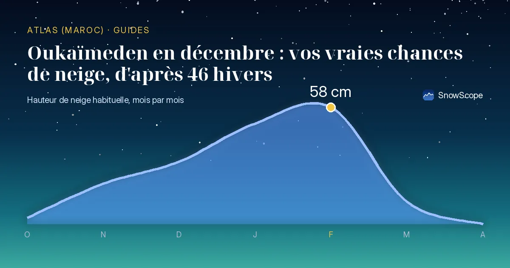

Oukaïmeden en décembre : vos vraies chances de neige, d'après 46 hivers
Décembre à Oukaïmeden, c'est une loterie. Un mi-décembre typique n'offre que 16 cm à mi-montagne (2 929 m), et seulement 11 % des hivers ont constitué une base de 50 cm d'ici là. Organisez votre visite autour des tempêtes, pas du calendrier.
Consultez les prévisions neige en temps réel pour Oukaimden ski resort sur l'application SnowScopeHauteurs de neige, alertes poudreuse et carte 3D, gratuitement.
L'altitude compte moins que vous le pensez ici
Oukaïmeden se situe haut dans l'Atlas, avec des pistes de 2 600 m à la base à 3 258 m au sommet. En décembre, les trois zones sont étonnamment proches : le 15 décembre, un hiver typique donne 15 cm à la base, 16 cm à mi-montagne et 17 cm au sommet. L'Atlas ne récompense pas l'altitude de la même manière que les chaînes européennes. Les trajectoires des tempêtes et la fonte entre les événements façonnent davantage le mois que les mètres d'altitude.
Les premières neiges durables arrivent généralement vers le 5 novembre, mais elles vont et viennent. Beaucoup de chutes de novembre disparaissent en quelques jours.

Les chiffres par date
Début décembre est maigre : le 1er décembre, un hiver typique affiche 12 cm à mi-montagne, et 28 % des hivers sont quasi dépourvus de neige (moins de 5 cm). Deux semaines plus tard (15 décembre), vous avez 16 cm dans un hiver moyen, 20 % toujours quasi nus, et 43 % avec au moins 25 cm. À Noël, 20 cm arrivent et 41 % des hivers atteignent 25 cm ou plus. Le 31 décembre, 24 cm est typique et la moitié de tous les hivers ont dépassé 25 cm.
La barre des 50 cm—une vraie base de ski—arrive rarement avant mi-décembre à mi-montagne : seulement 11 % des hivers. Elle arrive plus souvent le 31 décembre (15 %) et encore plus souvent au sommet (15 %, puis 20 % en fin d'année).

Quelle semaine pourrait convenir
Si vous cherchez une semaine où la neige moyenne atteint 50 cm à mi-montagne, les probabilités sont minces. Seulement 4 % des hivers le voient entre la dernière semaine de novembre et le 6 décembre, 13 % la deuxième semaine de décembre, 11 % la troisième et 13 % la quatrième. Aucune semaine n'est garantie. Un seul bon week-end après une tempête est beaucoup plus probable qu'une semaine complète de neige abondante.
La meilleure assurance est de surveiller les prévisions et de venir dans les jours suivant une tempête. Début décembre livre rarement ; fin décembre est votre meilleur pari.
Quand un grand décembre survient
Un hiver sur dix apporte un décembre généreux : 50 cm à mi-montagne le 15 décembre et 53 cm à Noël. L'hiver dernier (2025-26) a prouvé que c'est possible. Il a commencé modestement—33 cm à mi-montagne le 15 décembre—mais a alors monté en flèche à 78 cm le jour de Noël, atteignant finalement 132 cm sur la saison avec 149 jours de neige.
À long terme, décembre n'a pas beaucoup changé. La neige typique de mi-décembre à mi-montagne était 14 cm entre les hivers 1980-81 et 1994-95 et 11 cm entre les hivers 2011-12 et 2025-26. Dans les deux périodes, 40 % des hivers ont dépassé 25 cm à cette date. Décembre est aussi imprévisible maintenant qu'il l'a été pendant quatre décennies.
Ce que vous affrontez mi-novembre
Le 13 novembre 2026, notre carte de neige montrait 0 cm à toutes les trois altitudes. Aucune neige n'était prévue la semaine suivante. Ce n'est pas inhabituel pour mi-novembre. La saison de l'Atlas culmine en mars, quand mi-montagne retient généralement 53 cm. Novembre et décembre sont des mois de construction. Vous skiez quand les tempêtes arrivent, pas selon le calendrier.
Préparez vos couches, consultez les prévisions chaque jour et réservez des dates flexibles. Oukaïmeden récompense la patience plus que la planification.
Conseils aux skieurs
- Ne réservez pas un voyage en décembre des semaines à l'avance : attendez une prévision de tempête, puis allez dans les deux ou trois jours après son passage.
- Consultez la carte SnowScope le matin avant de voyager ; une seule tempête peut transformer une pente nue en journée de ski.
- La neige de début de saison est maigre et les rochers gisent dessous : restez sur les pistes damées et demandez à la station quelles pentes sont ouvertes.
- Décembre est un pari ici ; février et mars sont plus sûrs si vous voulez une neige abondante garantie, mais exigent une visite plus longue à la région.
À propos de ces chiffres
Les hauteurs de neige des stations sont la neige la plus épaisse sur le haut du domaine à la date indiquée ; ce sont des estimations pour une zone, pas une mesure en un point. Les prévisions peuvent changer. Consultez toujours le bulletin d'avalanche officiel avant le hors-piste.
Citer ce bulletin
Pour la recherche, l'enseignement ou la presse : chiffres et graphiques réutilisables librement sous CC BY 4.0 avec cette citation.
SnowScope (2026), Oukaïmeden en décembre : vos vraies chances de neige, d'après 46 hivers, https://snowscope.app/blog/fr/2026/11/oukaimeden-decembre-chances-de-neige-46-hivers.html, consulté le 2026-11-14
SnowScope (Atlas Labs). (2026, November 14). Oukaïmeden en décembre : vos vraies chances de neige, d'après 46 hivers. SnowScope snow reports. https://snowscope.app/blog/fr/2026/11/oukaimeden-decembre-chances-de-neige-46-hivers.html
BibTeX
@misc{snowscope2026oukaimedendecembrechance,
author = {{SnowScope (Atlas Labs)}},
title = {Oukaïmeden en décembre : vos vraies chances de neige, d'après 46 hivers},
year = {2026},
month = nov,
howpublished = {\url{https://snowscope.app/blog/fr/2026/11/oukaimeden-decembre-chances-de-neige-46-hivers.html}},
note = {Published 2026-11-14 13:29 UTC; accessed 2026-11-14}
}· CC BY 4.0 · Méthodes, données et outils →
Suivre Oukaimden ski resort
Gratuit : un message quand la neige arrive, et la météo chaque matin.
Autres bulletins neige

Un carnet pratique sur Oukaïmeden, dans le Haut Atlas : quand la neige arrive, en quelle quantité, quelles pentes viser et comment y aller depuis Marrakech.

Oukaimden a reçu 14 cm de neige fraîche en 72 heures, dont 5 cm au cours des dernières 24 heures. La station compte maintenant environ 3 cm sur le …

Pas encore de neige à Oukaïmeden le 12 novembre. Les pics de l'Atlas sont dénudés ; la saison hivernale atteint généralement son apogée en mars avec 58 cm au sommet.